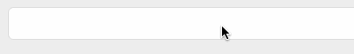
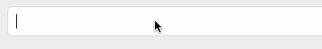

RustでGoogle IME skkserv を作った
Posted on November 1, 2016
Rustの勉強がてら、Google IME skkservを作った。
GitHubリポジトリ
https://github.com/yoshitsugu/google-ime-skkserv-rs
これは何か
SKKという日本語入力のIMEがある。SKKサーバーというサーバーをたてることで、文字変換の際に単に辞書を参考するだけでなく、サーバーから受け取る形にすることができる。
一方Google IMEには「Google CGI API for Japanese Input」というAPIがある。これは変換したい文字を投げてやると変換後の文字列が返ってくるものである。
そこでGoogle CGI API for Japanese Inputに中継してくれるSKKサーバーをたてればSKKユーザーでもGoogle IMEでの変換を活用することができる。このツール自体は既にあり(ページ最下部「参考にしたページ」参照)、今回は必要に迫られた、というよりはRust勉強のために作った、という側面が強い。
使い方
- Rustの環境を準備しておく。自分はrustupを使っている。
- 上のリポジトリをclone
cargo installgskkservで 55100ポートにskkservが待ち受けている状態になる。-hオプションでlistenするhost,-pオプションでlistenするportをそれぞれ指定できるようにしている。
使っている様子
Before

標準のSKK辞書では変換できない。
After

一発で変換できる。
難しかった点
- skkservに渡される文字列がEUC_JPで、Google IMEのAPIを使うにはUTF-8に変換しなければならず、Rustでやると結構面倒だった。
- まだあまりownershipまわりの扱い方がしっくりきていないのでもうちょっと経験が必要そう。
今後
さすがにネットワークI/Oがあると一瞬待つので、変換結果をキャッシュできるようにしたい。
また、今回Rustチュートリアルなどをさらっと見ながらつくっただけなので、コードの書き方についてももう少し洗練させていきたい。